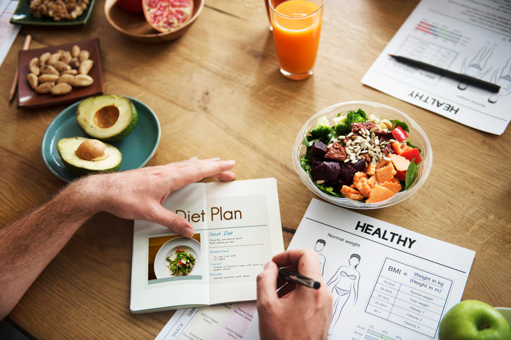

A 7-Day Healthy Diet Plan for Weight Loss and Muscle Gain
Achieving weight loss while simultaneously building muscle might sound like a challenging task, but with the right diet plan, it's entirely possible. This 7-day diet plan has been carefully crafted to help you shed those extra pounds while nourishing your body with the nutrients it needs for muscle growth. In this article, we'll outline a detailed plan for each day, highlighting the key nutritional benefits of each meal and discussing the extra advantages this diet plan can bring to your health.
Day 1: Protein-Packed Monday
Breakfast (Protein-Rich Breakfast)
Kickstart your day with a hearty omelet. Eggs are a fantastic source of high-quality protein, providing your body with the necessary amino acids for muscle repair and growth.
Lunch (Lean Chicken Lunch)
For lunch, enjoy a grilled chicken breast with a side of steamed broccoli and quinoa. This meal is packed with lean protein, fiber, and essential vitamins and minerals.
Dinner (Salmon and Vegetables)
End your day with baked salmon and a generous portion of mixed vegetables. Salmon is rich in omega-3 fatty acids, promoting muscle recovery and reducing inflammation.
Day 2: Energizing Tuesday
Breakfast (Energizing Breakfast)
Start your day with a smoothie made from Greek yogurt, banana, and a handful of spinach. This breakfast is an excellent source of energy, protein, and essential vitamins.
Lunch (Turkey and Avocado Lunch)
Opt for a turkey and avocado sandwich on whole-grain bread for lunch. Turkey provides lean protein, while avocados offer healthy fats and fiber.
Dinner (Quinoa and Asparagus Dinner)
Enjoy a filling dinner of quinoa and grilled asparagus. Quinoa is a complete protein source, and asparagus is packed with vitamins and antioxidants.
Day 3: Fiber-Filled Wednesday
Breakfast (Fiber-Rich Breakfast)
Indulge in a bowl of oatmeal topped with berries and nuts. Oats are rich in fiber, aiding in digestion and helping control appetite.
Lunch (Lentil and Spinach Salad)
For lunch, savor a lentil and spinach salad with a balsamic vinaigrette. Lentils are a great source of plant-based protein and fiber.
Dinner (Grilled Tofu and Broccoli)
Dinner features grilled tofu with a side of steamed broccoli. Tofu is a plant-based protein powerhouse, while broccoli is packed with vitamins and minerals.
Day 4: Balanced Thursday
Breakfast (Balanced Breakfast)
Start your day with a balanced breakfast of scrambled eggs, whole-grain toast, and a side of sliced fruit. This meal provides protein, complex carbs, and vitamins.
Lunch (Salmon Salad Lunch)
Opt for a salmon salad for lunch with mixed greens and a lemon vinaigrette. This meal offers a combination of protein and essential fatty acids.
Dinner (Balanced Beef and Veggie Dinner)
Dinner consists of lean beef stir-fried with a variety of colorful vegetables. Lean beef supplies protein and essential minerals like iron.
Day 5: Plant-Powered Friday
Breakfast (Plant-Based Breakfast)
Enjoy a plant-based breakfast of almond butter on whole-grain toast and a side of sliced apple. Almond butter provides healthy fats and protein.
Lunch (Chickpea Salad)
Lunch features a chickpea salad with mixed greens and a tahini dressing. Chickpeas are a fantastic source of plant-based protein and fiber.
Dinner (Veggie Stir-Fry)
End your day with a vegetable stir-fry made with tofu or tempeh. This meal is rich in plant-based protein and vitamins.
Day 6: Superfood Saturday
Breakfast (Superfood Breakfast)
Start your weekend with a superfood smoothie containing spinach, kale, berries, and a scoop of protein powder. This breakfast is a nutrient powerhouse.
Lunch (Quinoa and Chickpea Bowl)
Lunch features a quinoa and chickpea bowl with a lemon-tahini dressing. Quinoa and chickpeas provide an abundance of protein and fiber.
Dinner (Grilled Turkey and Sweet Potato)
Dinner consists of grilled turkey and a sweet potato. Turkey offers lean protein, while sweet potatoes provide complex carbs and vitamins.
Day 7: Restful Sunday
Breakfast (Restful Sunday Breakfast)
On your restful Sunday, enjoy a leisurely breakfast of Greek yogurt with honey and a sprinkle of nuts. This meal promotes relaxation and recovery.
Lunch (Avocado Toast Lunch)
Opt for a simple avocado toast with a side of mixed greens for lunch. Avocado offers healthy fats and fiber.
Dinner (Balanced Sunday Dinner)
End the week with a balanced dinner of baked chicken breast, brown rice, and steamed vegetables. This meal provides essential nutrients for recovery.
Extra Benefits of This Diet Plan
- Boosts Energy: The well-balanced meals provide sustained energy throughout the day.
- Improves Digestion: High-fiber foods aid in digestion and promote a healthy gut.
- Enhances Mood: Nutrient-rich foods can positively affect your mood and mental well-being.
- Supports Overall Health: The variety of foods ensures you receive a wide range of vitamins and minerals.
- Reduces Inflammation: Omega-3 fatty acids from salmon help reduce inflammation, benefiting joint health.
Incorporate this diet plan into your routine and combine it with regular exercise for optimal results. Remember to consult with a healthcare professional before making significant dietary changes, especially if you have any underlying health conditions.